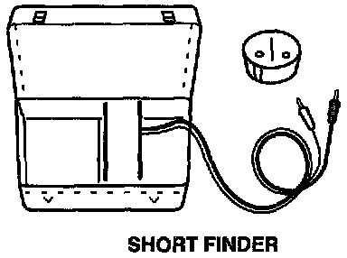

Short Finder (Short Circuit Locator)
Short Finder ( Short Circuit Locator):

Short finders are available to locate shorts to ground. The short finder creates a pulsing magnetic field in the shorted circuit which you can follow to the location of the short.
To order any test equipment shown above, contact your local tool supplier. For a list of suppliers and tool numbers, refer to Acura tool Service Bulletin.